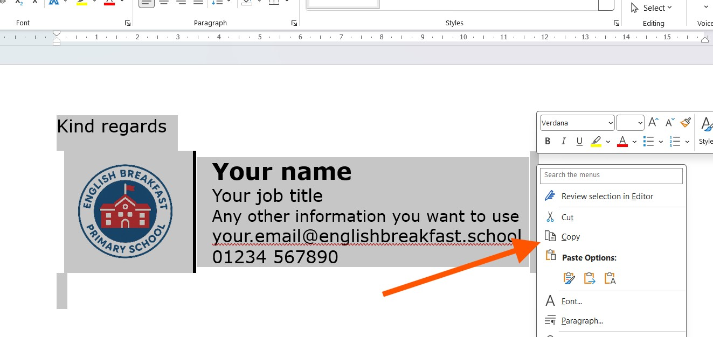
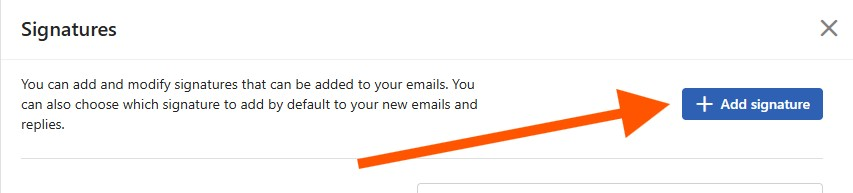

If you want your email signature to appear on all your emails in Outlook, follow the steps below::
The easiest way to create an email signature is to prepare it in Microsoft Word first. It is much easier to set up and format before copying it over to Outlook. You are welcome to use my template document if you would like: Email signature template
Feel free to customize your signature however you like. In this example, I am using a table with invisible outside borders, an image in the left cell, and text in the right cell. I have also added "Kind regards" right above the table.

Once you are happy with the result, open the document containing your brand-new signature.
Select everything (you can use the Ctrl + A shortcut or your mouse).
Press Ctrl+ C to copy the signature to your clipboard.

Go to your email inbox and click the gear icon in the top right corner to open Settings.

Type "Signatures" in the settings search box and click on the result.

Click the blue Add signature button

Name your signature (e.g., "Main").
Paste your signature from the clipboard (press Ctrl + V or right-click and select
Paste).
You will see a preview of how your signature will appear in your emails. Please check the
default
settings below before saving your changes.
Do not forget to press Save button

Done! Now you have your new signature added to Outlook